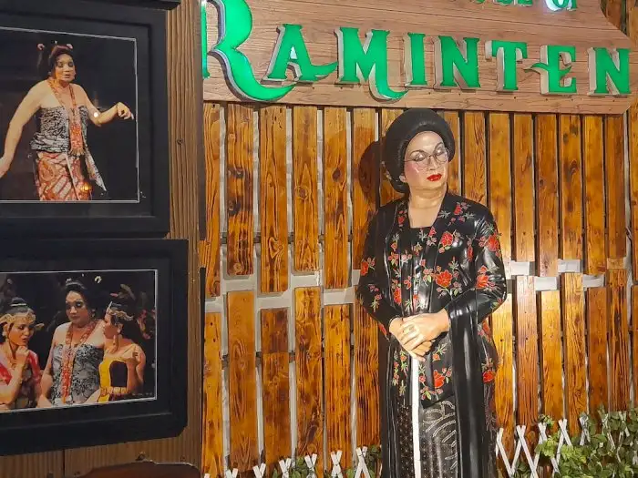
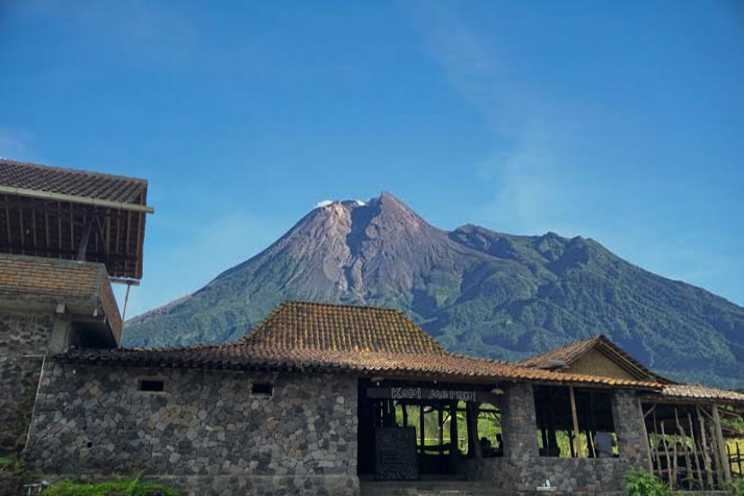

Pertama
Raminten
The House of Raminten merupakan salah satu rumah makan yang berlokasi di Kotabaru, Yogyakarta.

Kedua
Tempo Gelato
Tempo Gelato adalah sebuah gerai es krim yang populer di Yogyakarta. Sejak beroperasi di tahun 2016, gerai ini tidak pernah sepi pengunjung dan berkembang menjadi gerai es krim terbesar di Yogyakarta.

Ketiga
Kopi Merapi
Warung Kopi Merapi Cangkringan adalah sebuah warung kopi yang berlokasi di kawasan lereng Gunung Merapi yang sudah ada sejak tahun 2017 dan merupakan salah satu destinasi wisata kuliner yang populer di Jogja.